Exercícios
E 4.1.1. Resolva o seguinte sistema de equações lineares
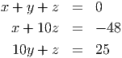
Usando eliminação gaussiana com pivotamento parcial (não use o computador para
resolver essa questão).
E 4.1.2. Resolva o seguinte sistema de equações lineares
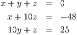
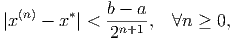
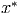
Usando eliminação gaussiana com pivotamento parcial (não use o computador para
resolver essa questão).
E 4.1.3. Calcule a inversa da matriz
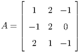
usando eliminação Gaussiana com pivotamento parcial.
E 4.1.4. Demonstre que se ad≠bc, então a matriz A dada por:
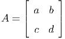 é
inversível e sua inversa é dada por:
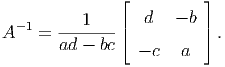
E 4.1.5. Considere as matrizes
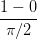
e
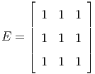 e o
vetor
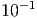
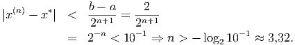
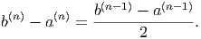
- Resolva o sistema Ax = v sem usar o computador.
- Sem usar o computador e através da técnica algébrica de sua preferência,
resolva o sistema (A+εE)xε = v considerando |ε| << 1 e obtenha a solução
exata em função do parâmetro ε.
- Usando a expressão analítica obtida acima, calcule o limite lim ε→0xε.
- Resolva o sistema (A + εE)x = v no Scilab usando pivotamento parcial e
depois sem usar pivotamento parcial para valores muito pequenos de ε como
10-10, 10-15,…. O que você observa?
E 4.1.6. Resolva o seguinte sistema de 5 equações lineares
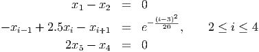
representando-o como um problema do tipo Ax = b no Scilab e usando o comando de
contra-barra para resolvê-lo. Repita usando a rotina que implementa eliminação
gaussiana.
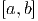
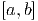
E 4.1.7. Encontre a inversa da matriz
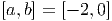
- Usando Eliminação Gaussiana com pivotamento parcial à mão.
- Usando a rotina ’gausspp()’.
- Usando a rotina ’inv()’ do Scilab.
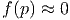
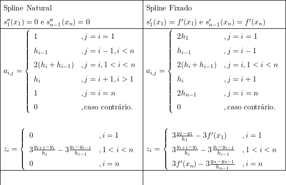